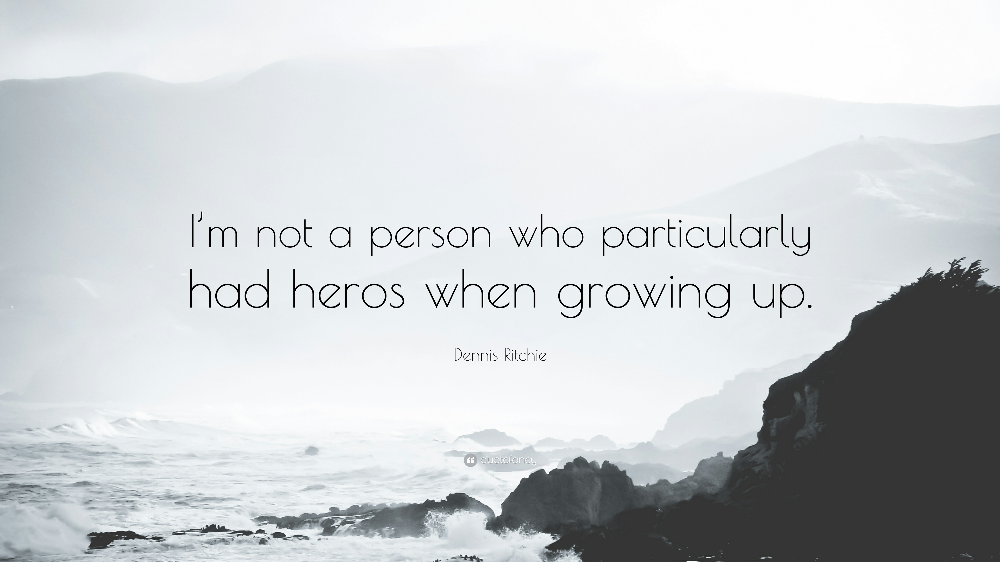

Quotes
I am not now, nor have I ever been, a member of the demigodic party.
"A language that doesn't have everything is actually easier to program in than some that do"
"Pretty much everything on the web uses those two things: C and UNIX."
"My work was fairly theoretical. It was in recursive function theory. And in particular, hierarchies of functions in terms of computational complexity. I got involved in real computers and programming mainly by being - well, I was interested even as I came to graduate school."
"At least for the people who send me mail about a new language that they're designing, the general advice is: do it to learn about how to write a compiler"
"... with proper design, the features come cheaply. This approach is arduous, but continues to succeed."
"I can't recall any difficulty in making the C language definition completely open - any discussion on the matter tended to mention languages whose inventors tried to keep tight control, and consequent ill fate"
"The number of UNIX installations has grown to 10, with more expected..."
"For infrastructure technology, C will be hard to displace."
"A language that doesn't have everything is actually easier to program in than some that do"
"Sometimes when you fill a vacuum, it still sucks."
"I'm just an observer of Java, and where Microsoft wants to go with C# is too early to tell."
"Obviously, the person who had most influence on my career was Ken Thompson. Unix was basically his, likewise C's predecessor, likewise much of the basis of Plan 9 (though Rob Pike was the real force in getting it together). And in the meantime Ken created the first computer chess master and pretty much rewrote the book on chess endgames. He is quite a phenomenon."
